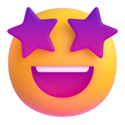

@mm.machine.ru01 / 06
Однафраза,иChatGPTперестанетстобойсоглашаться


листай



Хочу услышать правду

Отличная идея! Большой потенциал!

Работает с идеями, текстами, планами и ценами.
Не соглашайся со мной. Найди 3 слабых места.